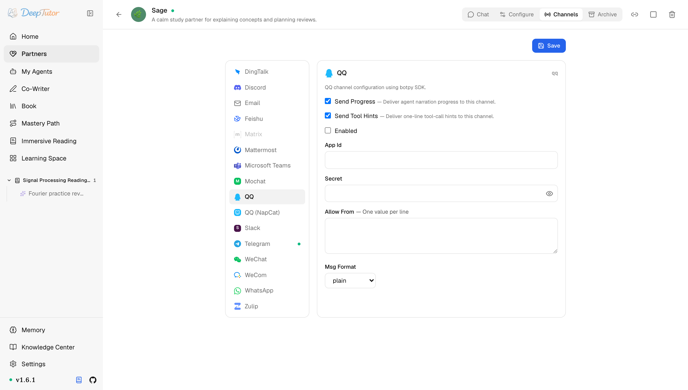
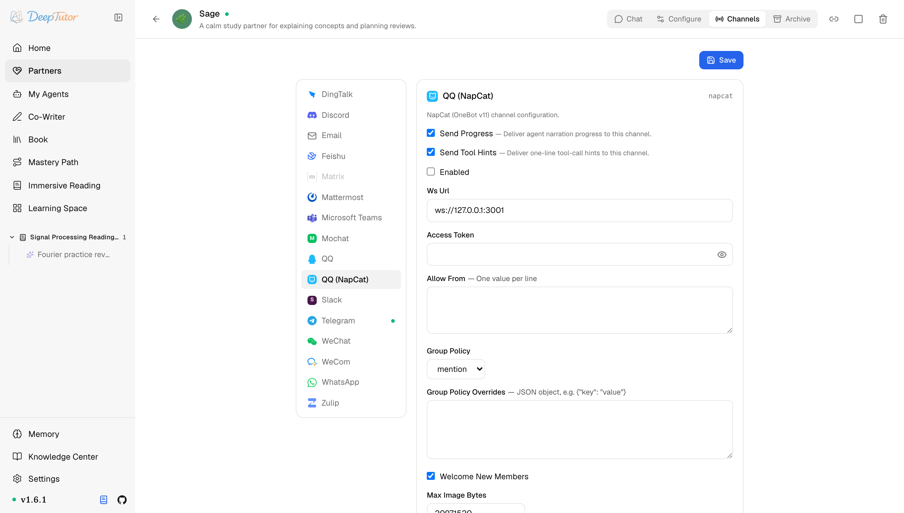

夥伴與管道QQ / NapCat
DeepTutor 接入 QQ 教學！2 條路任選：官方 Bot 走合規，NapCat 接個人號，附避雷清單！
為 Partner 設定騰訊 QQ 管道：官方 QQ Bot 與 NapCat / OneBot v11 個人 QQ。
原文連結：https://docs.deeptutor.info/zh-cn/partners/qq/
最近不少朋友在後台問我：DeepTutor 的學習夥伴（Partner），能不能接進 QQ？能不能用我自己的個人號？
答案是：能，而且有 2 條路。
一條走騰訊官方 QQ Bot，合規穩定；另一條走 NapCat，直接接入個人 QQ，對想用個人號的朋友來說，確實真香。
但是問題來了。官方 Bot 要去騰訊平台建立應用，NapCat 又要自己維護一個橋接行程，很多朋友不知道該選哪條、怎麼配。
接下來就把這兩條路分開來談。
DeepTutor 有 2 個 QQ 系管道：
| 管道 | 適用場景 | 設定 key |
|---|---|---|
| 你有騰訊官方 QQ Bot 帳號和應用憑證。 | ||
| QQ (NapCat) | 你想透過 NapCat / OneBot v11 接入個人 QQ。 | napcat |
無論走哪條路徑，Partner 執行時都先看所選卡片的即時狀態。它會在查日誌前區分監聽器（listener）已連線、缺少設定或依賴不可用。
一、官方 QQ Bot（ qq ）
先安裝 Partners 可選元件（extras），然後在 QQ Bot 開發平台 建立機器人（bot）。按需要開啟 C2C/direct 和群訊息等訊息類型。

設定欄位：
| 欄位 | 說明 |
|---|---|
| enabled | 是否隨 partner 啟動該管道。 |
| app_id | 騰訊 bot 平台裡的 App ID。 |
| secret | Bot secret。 |
| allow_from | 允許訪問的 QQ user ids / openids。空列表拒絕訪問；生產環境建議明確 id。 |
| msg_format | plain 或 markdown 。不同 QQ 使用者端 Markdown 表現不一，不確定時先用 plain 。 |
啟動：
deeptutor partner start <partner-id>二、透過 NapCat 接入個人 QQ（ napcat ）
NapCat 會把個人 QQ 暴露成 OneBot v11 WebSocket 端點（endpoint）。你需要單獨執行 NapCat，然後把 DeepTutor 指向它的 WebSocket URL。

設定欄位：
| 欄位 | 說明 |
|---|---|
| enabled | 是否隨 partner 啟動該管道。 |
| ws_url | NapCat WebSocket endpoint，預設 ws://127.0.0.1:3001 。 |
| access_token | 可選 OneBot access token。 |
| allow_from | 允許訪問的使用者 id。 * 只建議本機測試使用。 |
| group_policy | mention 、 open ，或 0 到 1 的機率。被 @ 或回覆時總會回應。 |
| group_policy_overrides | 按群 id 覆蓋 group policy 的 map。 |
| welcome_new_members | 是否歡迎新群成員。 |
| max_image_bytes | 入站圖片下載大小上限。 |
三、怎麼選
正式部署、合規群機器人優先用 qq。
如果你需要個人 QQ 工作流，並且能控制本機 NapCat 執行環境、理解個人帳號自動化風險，再用 napcat。
四、生產環境建議
- 正式部署、需要審批和穩定應用憑證時，優先用
qq。 - 只有在你明確要維護本機個人帳號橋接時，才用
napcat。 - 群聊先從 mention-only 行為開始（
group_policy: mention），確認噪音可控後再放寬。 - 小伺服器上執行 Partner 時，
max_image_bytes保守一些。
常見問題
- 官方 QQ auth failed —— 檢查
app_id、secret和騰訊平台啟用的訊息 intents。 - NapCat 連線了但沒有訊息 —— 檢查
ws_url、access_token，以及 NapCat 是否在發 OneBot v11 message events。 - 群裡太吵 —— 把
group_policy設為mention，或較低機率如0.1。
部署過程遇到問題，歡迎在留言區留言，把報錯的完整日誌貼出來，我看到會回覆。